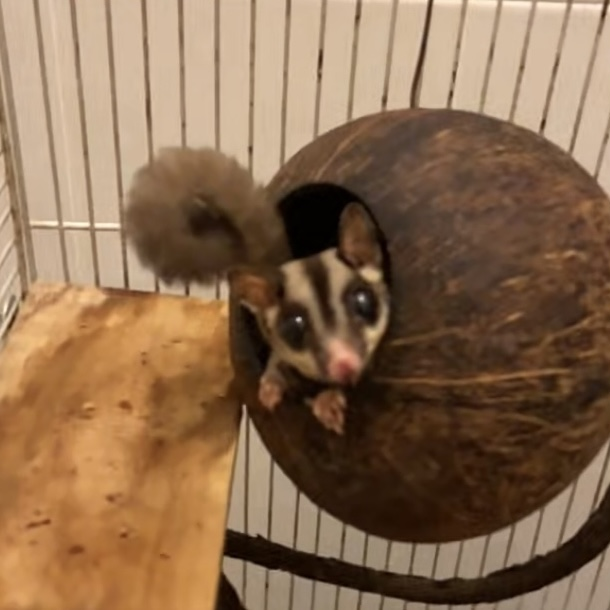
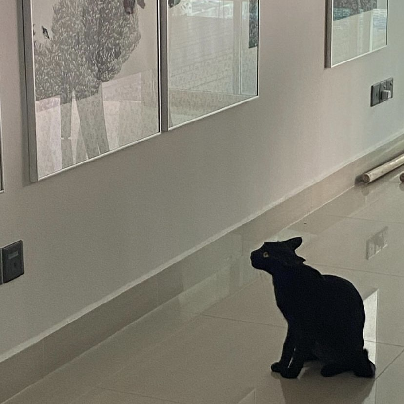

Age: 11 years old.
Introduction: Poppy is my oldest pet. She is a shy and cute sugar glider who eats fruits, fish & protein meal. Pictured below is Poppy waiting eagerly for her favourite snack: fish sticks.
Interests: 🐿 Eating fish treats 🐿 Zoning out
Age: 2 years old.
Introduction: Beanie is a stray cat who invites herself into our house on the daily. She is an independent cat who does what she wants, but also enjoys receiving attention and cuddles from humans.
Interests:
😻 Meowing at humans for attention 😻 Eating 😻 Taking long walks around the neighbourhood 